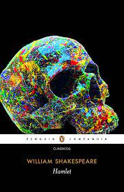
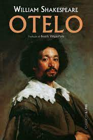
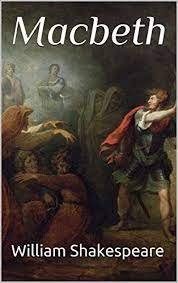
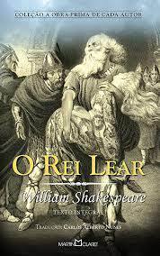

Dentre as obras de Shakespeare, as que mais se destacam são as tragédias. Veremos a seguir algumas das mais famosas e renomadas peças de William Shakespeare.

Hamlet é a peça mais encenada no mundo
e foi escrita entre 1599 e 1601.
Trama: se passa na Dinamarca, onde o príncipe Hamlet desempenha um papel de
vingar o pai, rei Hamlet, que foi assassinado pelo próprio irmão, Cláudio.
Este toma não só o trono, mas também a rainha viúva para si. O jovem príncipe então embarca
na missão de desmascarar as mentiras e a corrupção presente no reino da Dinamarca,
questionando sua própria sanidade no caminho.
A tragédia trata de temas como: traição, vingança, corrupção e moralidade.

Otelo é uma peça consagrada por diversos
especialistas e foi escrita por volta do ano de 1603.
Trama: Otelo é um general Mouro que serve no reino de Veneza e é casado com Desdêmonona.
Além desses, a história gira em torno de Cássio, tenente de Otelo e Iago, seu sub-oficial.
A peça Otelo envolve temas complexos como amor, ciúme, traição, inveja e racismo

Macbeth é uma tragédia escrita entre 1603 e 1607.
Trama: Macbeth se passa na Escócia no século XI. Os generais Banquo e Macbeth se
deparam com três bruxas que fazem uma profecia: Macbeth será rei e os filhos de Banquo o sucederão.
A história retrata um regicídio e suas consequências, tratando de temas como ética, traição, culpa e ganância.

O Rei Lear é uma peça escrita entorno de 1605.
Trama: se passa em uma Grã-Bretanha pré-cristã por volta de 800 a.c. quando o idoso
Rei Lear decide diividir o reino em três partes, uma para cada filha de acordo com a quantidade de amor que sentem pelo pai.
Entretanto, duas delas, Goneril e Regan, expressam um amor hipócrita pelo pai, enquanto Cordélia, a caçula, não consegue
expressar com palavras o amor genuíno que nutre pelo velho rei.
A história trata de temas como ingratidão, loucura, amor e morte.